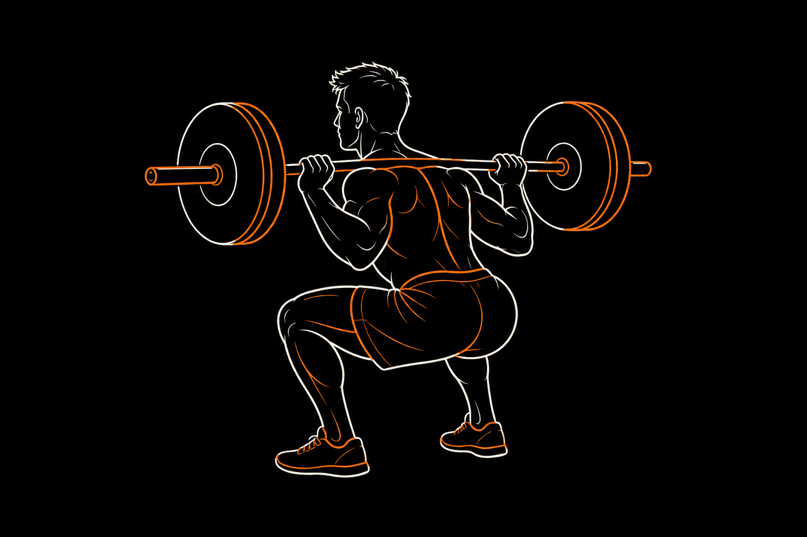
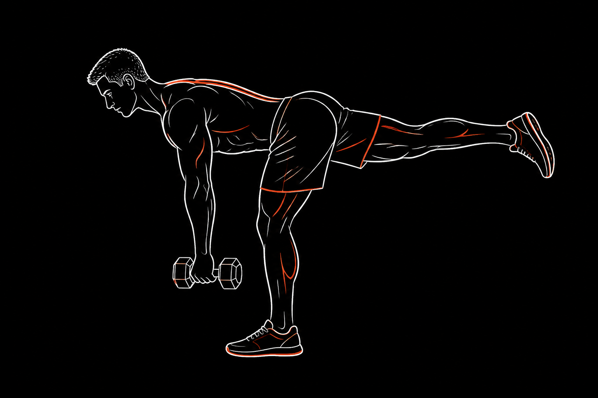
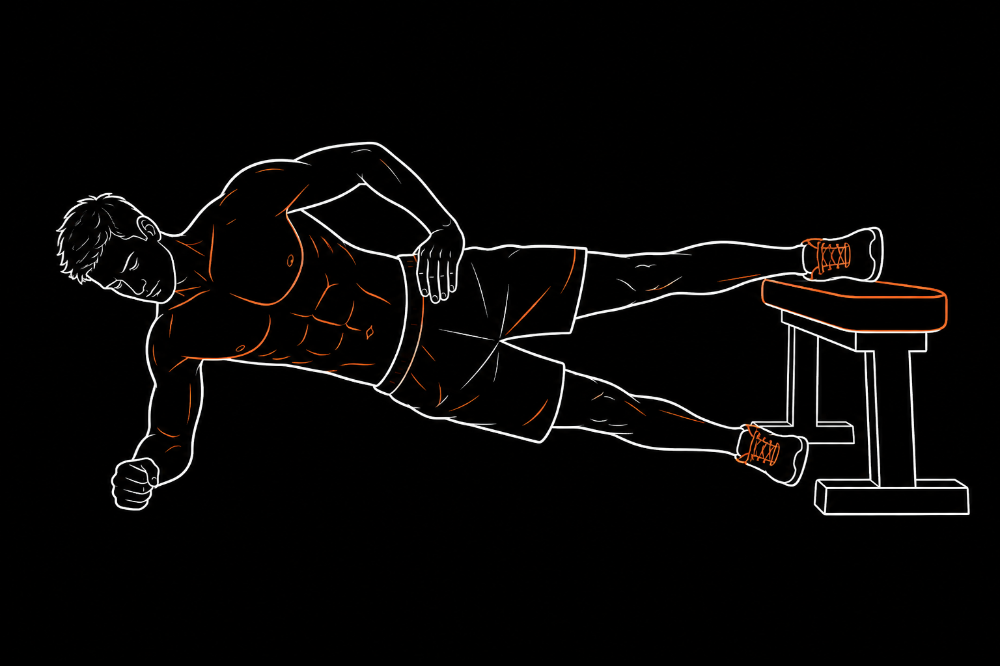
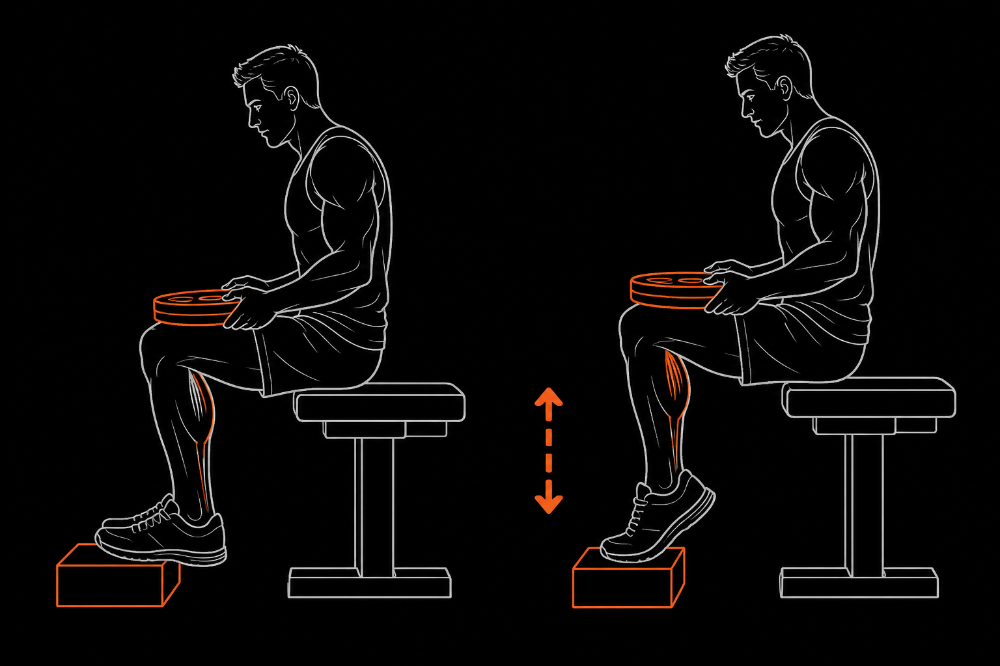
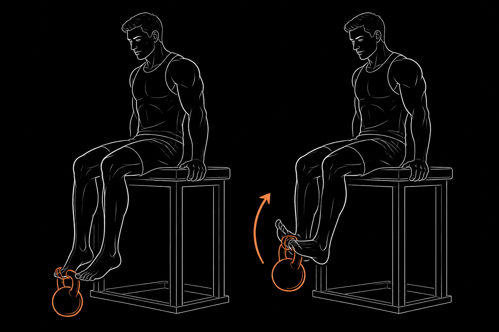

El estándar para reclutar unidades motoras, aumentar la rigidez tendinosa y mejorar
la capacidad de absorber impacto en cada zancada. Aquí no buscamos volumen muscular:
buscamos fuerza reactiva transferible a la carrera.
Dosificación recomendada3–4 × 5–6RPE 7–8 · Descanso 2–3 min

Boceto · Posición profunda
⚡ Propósito y enfoque
Desarrolla fuerza reactiva y potencia de extensión triple
(cadera, rodilla y tobillo). Al elevar la tendon stiffness, el Aquiles y el
cuádriceps almacenan y liberan energía elástica con más eficiencia en el contacto pie–suelo.
RFD (Rate of Force Development): enseña al sistema nervioso a reclutar fibras rápido, clave en sprints y cambios de ritmo.
Resistencia a la deformación: reduce el colapso excesivo de rodilla en la amortiguación, protegiendo el complejo patelofemoral.
Economía de carrera: menos tiempo de contacto y menor coste de O₂ a ritmos submáximos.
◎ Enfoque muscular
Agonistas principales
Cuádriceps (recto femoral, vastos)Glúteo mayor
Sinergistas y estabilizadores
Erectores espinalesAductor mayorIsquiotibialesSóleo y gastrocnemio
→ Cómo ejecutarlo
01 · Setup
Barra sobre trapecios. Pies al ancho de hombros o ligeramente más abiertos, rotación externa 15–30°. Activa el trípode plantar (talón, base del 1er y 5º metatarsiano).
02 · Brace
Inhala 360° hacia el abdomen y estabiliza la columna con un brace firme antes de iniciar el descenso. El tronco debe sentirse “blindado”, no rígido como una tabla.
03 · Excéntrica
Flexiona cadera y rodilla a la vez. Desciende controlado hasta romper la paralela si tu movilidad de tobillo lo permite sin perder la lordosis lumbar.
04 · Concéntrica
Empuja el suelo con intención. Pecho alto, rodillas sobre la línea de los pies, exhala al completar la extensión. Piensa “acelerar el suelo hacia abajo”.
Errores comunes
Valgo dinámico: la rodilla se hunde hacia dentro y aumenta estrés en tendón rotuliano y ligamentos.
Butt wink: la pelvis se mete en profundidad por falta de dorsiflexión o control de cadera.
Talones que se levantan: acorta la base de apoyo y sobrecarga la articulación patelofemoral.
Beneficio para el corredor
Mejora la economía de carrera, retrasa la fatiga neuromuscular al final de distancias largas
y ayuda a prevenir tendinopatía rotuliana y síndrome de dolor patelofemoral
(runner’s knee).
02 · Cadena posterior unipodal
Single-Leg RDL (Peso muerto rumano)
Fortalece isquiotibiales y glúteos en un patrón de una sola pierna que replica la
biomecánica del ciclo de zancada: bisagra de cadera + control anti-rotacional.
Dosificación recomendada3 × 8–10 /piernaRPE 7 · Descanso 90 s

Boceto · Bisagra en T
⚡ Propósito y enfoque
Correr es una sucesión de apoyos unipodales. El Single-Leg RDL entrena la
bisagra de cadera en una pierna mientras glúteo medio y tobillo evitan
la rotación pélvica y el colapso del arco plantar.
Sincronización posterior: trabaja isquiotibiales en longitud funcional, similar a la fase previa al apoyo.
Control anti-rotacional: el core profundo resiste la torsión transversal de la pelvis.
Simetría: detecta y corrige desequilibrios izquierda–derecha que la sentadilla bilateral puede ocultar.
◎ Enfoque muscular
Agonistas
IsquiotibialesGlúteo mayor
Estabilizadores clave
Glúteo medio y menorTibial posterior y peroneosMultífidos y cuadrado lumbar
→ Cómo ejecutarlo
01 · Posición
Apóyate en una pierna con microflexión de rodilla (10–15°). La pierna libre queda larga detrás; el peso del cuerpo sobre el trípode del pie de apoyo.
02 · Bisagra
Empuja la cadera hacia atrás. Torso y pierna libre bajan como una palanca rígida en “T”. La espalda se mantiene neutra, no redondeada.
03 · Pelvis nivelada
Las crestas ilíacas miran al suelo. Evita que la cadera libre se “abra” hacia el techo — ese es el error más frecuente.
04 · Extensión
Empuja el talón de apoyo contra el suelo y cierra con el glúteo hasta la vertical. Intenta no apoyar el pie libre entre reps si el equilibrio lo permite.
Errores comunes
Flexionar la columna en vez de bisagrar desde la cadera.
Perder el trípode plantar o dejar caer el arco interno del pie.
Rotar en exceso la cadera de la pierna elevada.
Beneficio para el corredor
Reduce el riesgo de distensiones de isquiotibiales en sprints y
mejora la estabilidad pélvica, limitando el balanceo ineficiente tipo Trendelenburg.
03 · Dúo unipodal de potencia
Búlgara + Step-Up
Combo obligatorio: la búlgara construye fuerza de desaceleración en rango profundo;
el step-up con ataque de rodilla transfiere esa fuerza a propulsión y cuestas.
Sobrecarga cuádriceps y glúteos en rango profundo mientras estira de forma dinámica
los flexores de la pierna trasera — útil si pasas muchas horas sentado y el psoas
tiende a acortarse.
Pie completo sobre un cajón (~90° de flexión de rodilla).
Empuja solo con la pierna de arriba — sin impulsarte de puntillas desde el suelo.
Arriba: triple extensión + rodilla libre hacia el pecho a 90°.
Baja en 3 segundos con control excéntrico estricto.
Errores del combo
Búlgara: inclinarte en exceso o levantar el talón delantero.
Step-up: “impulsarte” con el pie inferior; la carga debe vivir en la pierna de arriba.
Beneficio para el corredor
Ayuda a prevenir el síndrome de la cintilla iliotibial (ITBS) y la
condromalacia rotuliana, y aporta potencia específica para desniveles y tramos de montaña.
04 · Estabilidad aductora
Plancha Copenhagen (Adductor plank)
El estándar para salud de aductores, estabilidad pélvica lateral y transferencia
de fuerza en el plano frontal — donde muchos corredores están desprotegidos.
Dosificación recomendada3 × 20–30 s /ladoIsométrico · Descanso 60 s

Boceto · Plancha lateral aductora
⚡ Propósito y enfoque
El aductor mayor actúa como extensor y estabilizador pélvico en el apoyo. La Copenhagen
genera una co-contracción potente entre ingle y core lateral, reforzando el anillo pélvico
frente a impactos repetitivos.
Balance aductor/abductor: restaura la relación de fuerza entre glúteo medio e ingle.
Estabilidad del anillo pélvico: reduce cizallamiento sobre la sínfisis púbica.
◎ Enfoque muscular
Objetivos
Aductor mayor, largo y cortoGrácil y pectíneo
Core lateral
OblicuosCuadrado lumbarGlúteo medio contralateral
→ Cómo ejecutarlo
01 · Lateral
Acuéstate de lado con el antebrazo a 90° respecto al hombro. Cuerpo alineado de cabeza a pies.
02 · Apoyo
Apoya la cara interna de la rodilla (principiante) o del tobillo (avanzado) de la pierna superior sobre un banco.
03 · Elevación
Sube la cadera hasta formar una línea recta. No dejes que la pelvis caiga ni que el pecho rote hacia el suelo.
04 · Aducción
Mantén la pierna inferior elevada bajo el banco sin tocar el piso. Respira de forma fluida; no aguantes la respiración.
Errores comunes
Dejar caer la cadera por fatiga del oblicuo o aductor.
Rotar el pecho hacia el suelo y perder la alineación lateral.
Pasar a palanca de tobillo antes de dominar la versión de rodilla.
Beneficio para el corredor
Reduce la incidencia de pubalgia y sobrecargas de ingle, y mantiene
la cadera estable en terrenos irregulares o cambios de dirección.
05 · Complejo antero-posterior de tobillo
Tobillo & pantorrilla
Trabajo focal del sóleo (fuerza profunda de propulsión) y del
tibial anterior (freno del pie en el heel strike) para tolerar impacto
de forma inteligente.
Dosificación recomendada3–4 × 12–15Excéntrica 3 s · Descanso 60 s
5A
Elevación de talón sentado
Sóleo

Boceto · Sóleo sentado
El sóleo puede soportar 6–8× el peso corporal al correr. Con la rodilla
a 90°, el gastrocnemio se acorta y el sóleo asume casi toda la carga de plantarflexión.
Siéntate con rodillas a 90° y metatarsos sobre un bloque elevado.
Carga (mancuerna/barra) sobre los muslos, cerca de las rodillas.
Baja el talón al máximo con estiramiento controlado (3 s).
Empuja por el metatarso hasta el tope y pausa 1 s arriba.
5B
Eleva-puntas con pesa rusa
Tibial anterior

Boceto · Tibial anterior
El tibial anterior frena la caída del pie en el contacto inicial y modula
pronación/supinación. Si está débil, el impacto viaja directo a la tibia.
Siéntate en un banco alto con las piernas colgando.
Engancha una pesa rusa ligera (4–8 kg) o banda en el empeine.
Dorsiflexiona llevando la punta hacia la espinilla.
Pausa arriba y baja en 3 s con control estricto.
Errores comunes
Rebotar abajo en el sóleo y perder tensión muscular útil.
Rotar el tobillo en vez de moverlo en el plano sagital puro.
Prevención específica
Este bloque es especialmente útil contra:
Periostitis tibial (MTSS)Tendinopatía de AquilesFascitis plantarFracturas por estrés